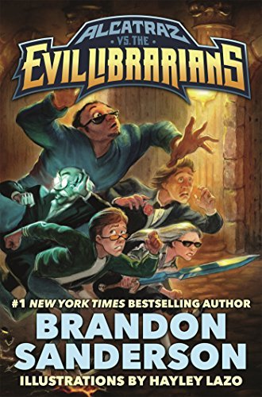

Alcatraz vs. the Evil Librarians
⭐️⭐️⭐️⭐️
These are fun books - they don't take themselves too seriously... or maybe we're the ones not taking the books seriously enough. This book points out the twisted goal of the librarians in the world, who control the world's information, to suppress the knowledge of additional continents, technology, abilities, and even history. The main character (Alcatraz), along with those in his family, has an interesting super power - the ability to break things. Maybe it's better than his grandfather's ability - that of arriving late. Who knows? Regardless, read on to discover the real story of what's going on... or keep thinking this book is "fantasy".
Really though, I would have really enjoyed these books as a teenager. As an adult, they're still entertaining. They have a unique writing style (of the autobiographical narrator interacting with the reader), and the narrator has a fun sense of humor.